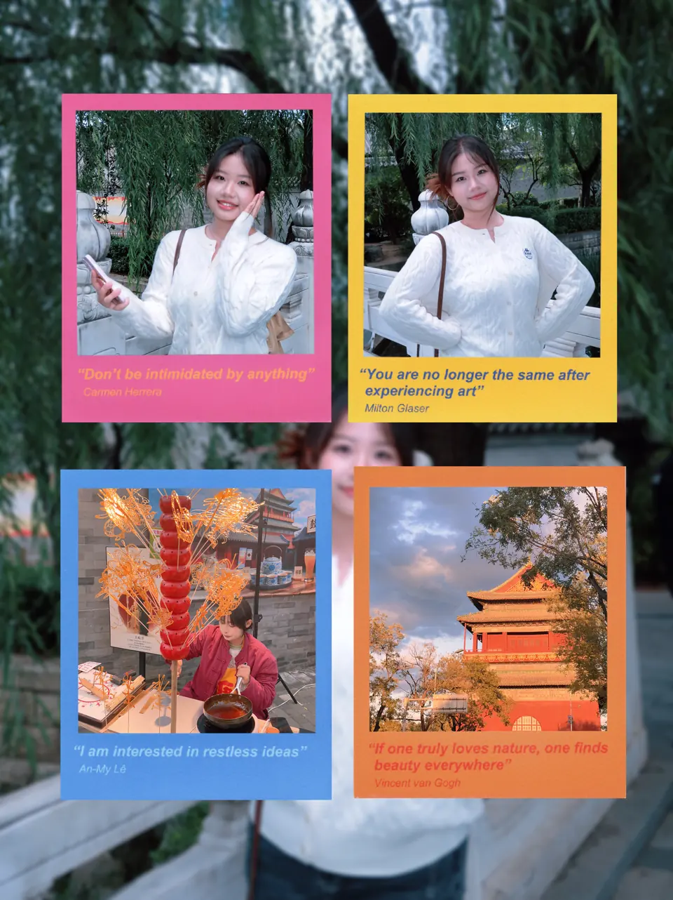

Personal album · 01
Weekend
Walks.
Unhurried afternoons, neighborhood detours, and the soft light at the end of a week.
Photographs
8 photos · Weekend collection
Personal album · 01
Unhurried afternoons, neighborhood detours, and the soft light at the end of a week.
